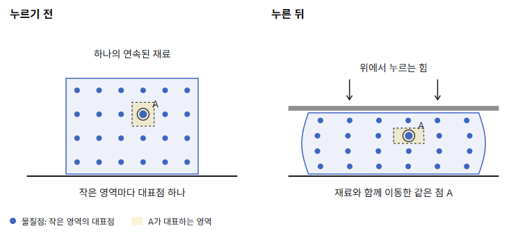
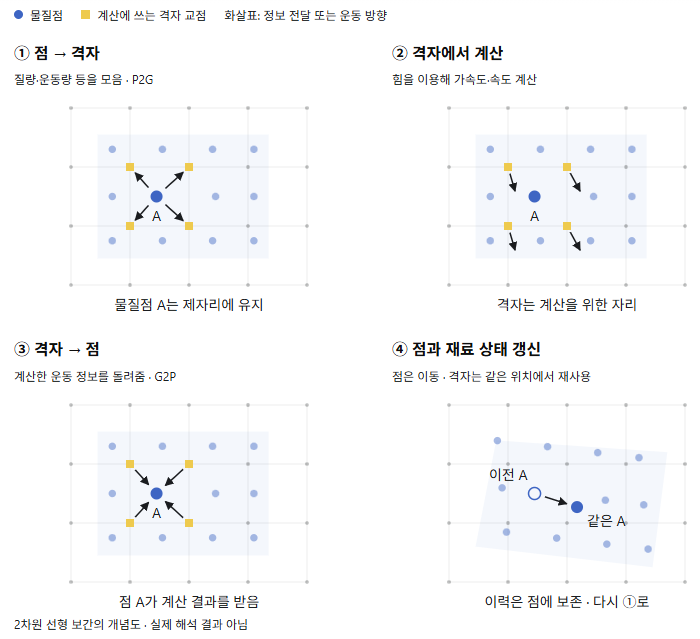

MPM (물질점법) 쉬운 설명
재료를 따라 움직이는 점 + 계산용 격자 — 그리고 우리 MPM 에서 쌓인 질문
2026-11-16 · 1 부 = MPM 일반 원리 (1저자가 받은 설명을 옮기고 문장만 다듬음 · 그림 2 장 = 원리 개념도) · 2 부 = 우리 MPM 작업에서 되풀이해 나온 질문과 답 (답마다 날짜 · 근거 문서 · 계속 덧붙임)
MPM = Material Point Method, 우리말로 물질점법. 재료가 눌리거나 늘어나거나 흐를 때 재료의 각 부분이 어떻게 움직이고 변형되는지 계산하는 수치해석 방법이다. 핵심은 두 가지 — 재료의 상태는 재료를 따라 움직이는 점에 기록하고, 힘과 움직임은 따로 놓은 계산용 격자에서 계산한다.
1 부 · MPM 일반 원리
1. 물질점은 작은 재료 영역을 대표하는 점
반죽 한 덩어리를 위에서 누르면 납작해지고 옆으로 퍼진다. 컴퓨터가 이 과정을 계산하려면 반죽의 여러 부분을 구별해서 따라가야 한다.
그래서 반죽을 머릿속으로 작은 영역들로 나누고, 각 영역을 대표하는 점 하나씩을 정해 둔다. 그 점이 물질점 (material point) 이다. 각 점에는 자신이 대표하는 영역의 질량 · 위치 · 속도 · 부피 · 응력 같은 정보를 저장한다.

눌리기 전의 A 와 눌린 뒤의 A 는 같은 재료 부분을 따라가는 점이다. 위치가 달라져도 "원래 이 부분이었구나" 를 계속 알 수 있다. 물질점 하나가 가진 기록을 일상적인 말로 바꾸면 다음과 같다.
| 물질점에 저장하는 정보 | 쉬운 의미 |
|---|---|
| 위치 | 지금 이 재료 부분이 어디에 있는가? |
| 질량 · 부피 | 얼마나 많은 재료를 대표하고, 얼마만큼의 공간을 차지하는가? |
| 속도 | 어느 방향으로 얼마나 빠르게 움직이는가? |
| 응력 | 내부에서 얼마나 눌리거나 당겨지거나 밀리고 있는가? |
| 변형 상태 · 이력 | 얼마나 변형됐고, 이전에 어떤 변형을 겪었는가? |
이 정보가 재료를 따라 움직이므로, "한 번 눌려서 영구적으로 찌그러진 부분" 의 이력도 계속 유지할 수 있다.
꼭 구분할 것
물질점 하나가 원자 하나나 실제 분말 입자 하나를 뜻하지는 않는다. 연속된 재료를 계산하려고 정한 대표점이므로, 실제 분말 입자 하나의 내부를 여러 물질점으로 나타낼 수 있다. 그림에서 점 사이에 공간이 보이더라도 그 공간이 곧 실제 기공은 아니다.
우리 MPM 에서는 기공률을 점 사이 틈으로 세지 않고, 판 높이와 고체 부피로 센다 — 기공률 = 1 − 고체 부피 / (면적 × 판 높이). (아래 Q1 · Q12)
2. 그러면 격자는 왜 필요할까
물질점으로 재료의 각 부분을 따라갈 수 있게 됐다. 이제는 이런 질문에 답해야 한다.
"위에서 누르는 힘과 재료 내부의 저항을 고려하면, 다음 순간에 각 부분은 어느 방향으로 얼마나 움직일까?"
MPM 은 이 계산을 위해 재료가 있는 공간에 모눈종이 같은 배경격자를 놓고, 격자 선이 만나는 교점들을 계산에 쓴다. 두 가지 역할을 구분하면 된다.
- 물질점: 재료와 함께 움직이면서 재료의 상태와 이력을 보관한다.
- 배경격자: 물질점에서 받은 정보로 힘 · 가속도 · 속도 등을 계산한다.
배경격자는 재료 안에 들어 있는 실제 철망이나 결합 구조가 아니라 계산을 위한 공간 분할이다. 일반적인 MPM 은 규칙적인 격자를 되풀이해 쓰고, 물질점은 그 격자 사이를 이동한다.
비유하면, 물질점은 각 재료 부분의 기록장이고 격자는 여러 기록을 모아 계산하는 임시 계산판이다.
3. MPM 은 점 → 격자 → 점 을 되풀이한다
아래 그림에서 동그란 점 A 와 네모로 표시한 격자 교점을 구분해 보자.

① 물질점의 정보를 격자에 모은다 — P2G (Particle to Grid)
각 물질점이 가진 질량과 운동량 정보를 주변 격자 교점에 나누어 기록한다. 화살표는 정보 전달을 나타낸다 — 물질점 자체가 격자 교점에 달라붙거나 실제 재료가 네 조각으로 흩어지는 과정이 아니다. 그래서 첫 단계에서 A 는 제자리에 있다. 여러 물질점이 같은 교점에 정보를 보내면 그 교점은 정보를 합쳐 계산에 쓴다.
② 격자에서 힘과 움직임을 계산한다
격자에서는 기본적으로 뉴턴의 운동법칙을 쓴다.
질량 m × 가속도 a = 합력 F합력에는 밖에서 누르는 힘과 재료 내부에서 변형에 저항하는 힘이 함께 들어간다
반죽을 누르는 상황이라면, 누르는 힘과 반죽 내부의 저항을 고려해 각 위치의 속도가 어떻게 달라질지 계산하는 것이다.
③ 계산 결과를 다시 물질점에 돌려준다 — G2P (Grid to Particle)
격자에서 계산한 속도나 속도 변화를 주변 물질점에 돌려준다. A 는 주변 격자 교점의 결과를 조합해 다음 순간에 자신이 어떻게 움직여야 하는지 얻는다. 전체 구조는 "물질점의 정보로 격자를 계산하고, 그 결과로 물질점을 갱신하는 것" 이다.
④ 점을 움직이고 재료 상태를 갱신한다
그 결과에 따라 물질점의 위치와 속도가 바뀐다. 주변의 속도 차이에서 변형을 계산하고, 재료의 성질을 나타내는 식 (구성식) 으로 응력도 갱신한다. 그다음 격자의 임시 계산 정보를 비우고 다음 계산을 시작한다. 이미 움직인 물질점의 위치와 누적된 변형 이력은 그대로 남는다 — 격자 정보를 비운다고 눌린 재료가 원래 모양으로 돌아가지는 않는다.
이 과정을 짧은 시간 간격으로 되풀이하면, 재료가 계속 눌리고 퍼지는 모습을 계산할 수 있다.
4. 점과 격자를 따로 쓰는 이유 — 큰 변형
재료에 그물망을 붙여 놓고 같이 변형시킨다고 생각해 보자. 처음에는 반듯했던 그물망도 재료가 심하게 눌리고 늘어나면 납작해지거나 뒤틀린다. 재료를 따라 격자도 움직이는 일반적인 라그랑주 방식의 유한요소법 (FEM) 에서는 이런 격자의 심한 왜곡이 계산을 어렵게 만들 수 있다.
MPM 에서는 재료를 따라가는 역할을 물질점이 맡고, 계산에는 규칙적인 배경격자를 재사용한다. 그래서 재료가 크게 변형돼도 계산격자가 계속 찌그러지는 문제를 피할 수 있다.
다만 FEM 도 큰 변형을 계산할 수 있다 (재격자화 등). 문제의 변형 정도와 필요한 정확도에 따라 알맞은 방법이 달라진다.
5. 우리가 쓰는 DEM 과는 무엇이 다를까
둘 다 화면에 많은 점이나 입자가 보일 수 있지만, 그 점이 무엇을 대표하느냐가 다르다.
| 구분 | 일반적인 구형 DEM | MPM |
|---|---|---|
| 하나의 계산 대상 | 크기와 지름을 가진 개별 입자 | 작은 재료 영역을 대표하는 물질점 |
| 주로 따라가는 것 | 입자의 이동 · 회전, 입자 사이 접촉 | 재료 각 부분의 이동 · 변형 · 응력 |
| 힘을 계산하는 기본 방식 | 입자 사이의 접촉력과 토크 | 재료의 응력에 따른 힘을 배경격자에서 계산 |
| 실제 분말 입자 하나의 표현 | 구 하나 또는 여러 요소의 집합 등 | 입자 내부를 여러 물질점으로 나타낼 수 있음 |
| 같은 대상을 계속 추적하나 | 예 — 같은 입자 번호 (위치 · 속도 · 각속도를 이어서 갱신) | 예 — 같은 물질점 (위치 · 속도 · 변형 상태를 이어서 갱신) |
| 과거 정보 | 입자 상태 + 모델에 따른 접촉 이력 (예: 접촉마다 누적 접선변위) | 물질점 상태 + 재료 변형 이력 (소성 구성식이 있을 때) |
| 입자 내부 위치별 소성변형 | 구 하나로는 직접 풀지 않음 (탄소성 접촉 모델도 모양은 구) | 소성 구성식과 해상도가 있으면 풀 수 있음 |
두 방법 모두 "힘 계산 → 운동방정식 적분 → 이동 → 다시 힘 계산" 을 되풀이한다. "DEM 은 정보가 재료를 따라 움직이지 않는다" 는 틀린 말이다 — DEM 도 같은 입자를 계속 추적하고, 우리 LIGGGHTS 덱은 접촉마다 누적된 접선변위 (접선 이력) 를 저장한다 (재시작에서 이 이력이 이어지는지를 보는 일이 G2c′ 다 · Q29). 진짜 차이는 입자 내부를 무엇으로 나타내느냐다.
전형적인 DEM 의 입자는 지름과 회전을 가진 유한한 크기의 입자이고, MPM 의 물질점은 연속체의 상태를 기록하는 계산점이다.
분말을 누르는 상황으로 생각하면 더 쉽다. 입자들이 서로 자리를 바꾸는 모습과 입자 자체가 납작하게 변형되는 모습은 서로 다른 현상이다. MPM 을 쓰면 하나의 입자 내부에도 여러 물질점을 두어, 그 입자 안의 각 부분이 어떻게 이동하고 변형되는지 나타낼 수 있다. 실제로 MPM 과 접촉 계산을 결합해 변형 가능한 입자 집합의 압축을 연구한 사례가 있다 (9 절의 litdb 카드).
6. 전극 압착에 연결하면
예를 들어, 고체전해질 (SE) 입자가 눌리면서 주변 활물질 (AM) 입자의 형태에 맞춰 변형되는 과정을 모델링하고 싶다고 하자. MPM 관점에서는 SE 입자 내부를 여러 물질점으로 나타내고, 압착에 따라 각 부분이 어디로 이동하는지, 얼마나 변형되는지, 어느 부분에 응력이 모이는지를 계산하도록 구성할 수 있다. 이는 MPM 의 원리를 전극 문제에 연결한 모델링 예시이며, 앞의 입자 압축 연구가 곧바로 특정 배터리 재료를 검증한 것은 아니다.
결과를 정하는 데는 재료의 성질을 나타내는 구성식도 필요하다. 쉽게 말해 다음과 같은 규칙이다.
- 힘을 빼면 원래 모양으로 얼마나 돌아오는가?
- 어느 정도 눌리면 영구적으로 변형되는가?
- 변형이 커질수록 더 강하게 저항하는가?
MPM 은 이런 재료법칙을 이용해 움직임과 변형을 계산하는 방법이다. 그래서 논문을 볼 때는 "MPM 을 썼다" 와 함께 "어떤 재료법칙과 접촉 조건을 넣었는가" 를 확인하면, 그 해석이 실제로 무엇을 설명하는지 알 수 있다.
2 부 · 우리 MPM
7. 우리 MPM 은 지금
| 항목 | 지금 (2026-11-16) |
|---|---|
| 코드 | 3D = scripts/mpm3d_compaction.py (MLS-MPM · GPU) · 2D 대조 = scripts/mpm_dem_match.py |
| SE 구성식 | von Mises (J2) 소성 · E 1.53 GPa · ν 0.49 · σ_y 0.30 GPa (3D 기본값) — 왜 이 값인지 = Q5 – Q9 |
| AM | DEM 압밀이 끝난 위치에 고정한 장애물 (스캐폴드) · AM 에는 물질점이 없다 — Q7 |
| 판 (플래튼) | 위에서 내려와 목표 응력 300 MPa · 정지 규약 (servo · hold) 을 결과와 같이 적는다 — Q10 · Q11 |
| 내는 것 | SE 형상 변화 · 응력장 · 누적 소성 변형장 · 판 높이 (두께) · STEP3 복셀 전도도 (Q4) |
| DEM 의 몫 | 접촉망 전도도 (접촉마다 협착 저항) · 퍼콜레이션 · 배위수 · 파괴 · Furnas dip (Q16) |
| 재설계 | [DEM 우선 (수영)] — 가압부터 탈압까지 AM 과 SE 를 한 모델로 · 2D 시험 먼저 (Q20 – Q22) |
8. 우리 MPM Q&A (쌓아 가는 곳)
우리 MPM 작업에서 되풀이해 나온 질문과 지금의 답이다. 질문을 누르면 답이 펼쳐진다. 답마다 날짜와 근거 문서를 붙였다. 새 질문은 해당 묶음 끝에 같은 꼴 (질문 · 답 · 날짜 · 근거) 로 덧붙이고, 답이 바뀌면 옛 답을 지우지 않고 '바뀜 (날짜)' 표지를 단다.
가. 원리 · 우리 틀
Q1물질점 하나가 실제 분말 입자 하나인가요?06-17
아니다. 물질점은 연속된 재료의 작은 영역을 대표하는 계산점이다. 우리 3D MPM 은 SE 입자 하나를 여러 물질점으로 채운다 — 512 격자 런에서 물질점이 약 1.15 × 10⁸ 개였다. 점 사이의 빈 공간도 기공이 아니다: 기공률은 판 높이와 고체 부피로 센다.
근거: CLAUDE.md "512 GRID-CONVERGENCE (2026-06-17)" · scripts/mpm3d_compaction.py
Q2우리 MPM 에서는 입자 모양이 정말 바뀌나요?06-08 · 06-22
바뀐다. SE 를 von Mises (J2) 소성 연속체로 풀어, 입자가 납작해지고 빈 곳으로 흘러 들어간다. 2D 결과의 형상 (중심은 남고 경계가 평평해짐) 이 SEM 단면과 맞았다 (정성 비교).
DEM 은 입자가 강체 구라 형상이 바뀌지 않고, 겹침을 소성의 대리로 쓴다. 문헌의 '탄소성 DEM' (예: Varkey 2026) 도 접촉 힘 법칙만 탄소성이고 입자는 구 그대로다.
근거: CLAUDE.md "MPM cap/champion (2026-06-07→08)" · docs/lit_varkey2026_multicontact_dem.md
Q3DEM 과 MPM 을 서로에게 맞춰 보정하면 안 되나요?06-07
안 된다. 둘을 각자 실험에 따로 보정한 뒤 비교한다. 맞으면 교차검증이고, 다르면 모델 한계를 숫자로 잰 것이다 — 둘 다 결과다. 한쪽을 다른 쪽에 맞추면 순환이다 (예: MPM σ_y 를 DEM Heckel 에서 뽑은 값에 맞추기).
근거: CLAUDE.md "DEM ↔ MPM Complementary Simulation Frame" [4] (2026-06-07 확정)
Q4MPM 도 전도도 (σ) 를 낼 수 있나요?08-11 · 09-08
낸다. STEP3 가 MPM 의 상 (phase) 격자 위에서 ∇·(σ∇φ) = 0 을 유한체적으로 풀어 이온 · 전자 · 열 전도도를 낸다 (08-11 정정 — 그 전에는 "MPM 은 σ 를 못 낸다" 고 잘못 적었다).
다만 계면 저항 항이 0 이라, DEM 접촉망에서 접촉 협착을 뺀 가지 (CONTACT_FREE) 위에 있다. 그래서 두 σ 의 일치를 독립 교차검증으로 인용하지 않고, 절대값을 실험 옆에 둘 때는 '협착 미포함' 을 같이 적는다. 빠진 접촉 · 계면 저항을 복셀 계산에 넣는 일이 Rint 트랙이다 (사이드바 'Rint 설명').
근거: docs/voxel_contact_free_gap.md · 원장 CL-81 · scripts/step3_sigma.py
나. 모델 설정 — 왜 이렇게 두었나
Q5SE 영률을 실제 값 대신 1.53 GPa 로 낮춘 이유는?06-06
실제 SE 영률은 우리 DFT 22.06 GPa (문헌 22–24 GPa) 다. 그런데 연속체 MPM 은 분말 압밀의 입자 재배열 · 입계 미끄럼 · 미세 파괴를 담지 못한다. 실제 E (24 GPa) 로 두면 순수 SE 가 300 MPa 에서 기공 33–38 % 에 멈췄다 (너무 뻣뻣함). 낮춘 E 가 그 빠진 기전을 대신한다 — DEM 도 같은 이유로 18 배 낮춘다 (1.35 GPa).
낮춘 E 는 물성이 아니라 보정값이다. 이 연화가 접촉 표현의 한계와 얼마나 관련되는지는 가설로 두고, 재설계 트랙이 2D 시험으로 가른다 (Q20). 실제 E 에 부피 캡을 더하는 길은 실패했다 (Q17).
근거: CLAUDE.md frame [2] · "E_eff CROSS-VALIDATED by independent true-plastic MPM (2026-06-06)" · docs/reviews/dem_redesign_direction_20261109/briefing_ko.md §1
Q6포아송비 ν 를 0.49 로 둔 이유는?06-16
E 를 낮추면 부피 탄성률 K 까지 낮아진다 (ν 0.30 이면 K 1.27 GPa). 그러면 SE 가 부피로 짓눌려 기공률 0 % 까지 과압축됐다. ν 0.49 이면 K = E / (3(1 − 2ν)) = 25.5 GPa 로 우리 DFT 체적탄성률 B₀ 26.23 GPa 와 −2.8 % 차이이고, 전단 탄성률만 무르다 (μ 0.51 GPa). 즉 연화는 전단에만 두고 부피는 실제에 가깝게 둔다 = 부피를 지키며 흐르는 소성 흐름.
근거: CLAUDE.md "3D MPM compaction — 3-fix calibration (2026-06-16)" · docs/mpm3d_calibration.md
Q7AM (활물질) 은 왜 움직이지 않게 얼려 두나요?06-26
네 가지 이유다. ① AM 이 하중을 받치는 것은 강체 입자의 접촉망 현상이라 DEM 의 몫이다. ② 움직이는 강체 AM 을 넣으면 힘 사슬이 SE 를 과하게 가려 기공이 36–41 % 로 남는다 (반대쪽 비물리). ③ AM 을 물질로 넣으면 384 격자 이상에서 시간 간격 (CFL) · 메모리가 터진다. ④ DEM 의 AM 위치가 이미 300 MPa 로 압밀된 골격이라 움직이면 그 골격에서 벗어난다.
대가: AM 의 하중 분담이 빠진다 (Q10 · Q19).
근거: docs/mpm_scaffold_reliability_and_am_freeze.md
Q82D 와 3D 의 σ_y 가 왜 다른가요 (2D 0.15 · 3D 0.30 GPa)?06-16
3D 는 재료가 흐를 방향이 하나 더 있어 같은 압력에서 더 쉽게 치밀해진다. 그래서 같은 순수 SE 보정 표적 (300 MPa 에서 기공률 약 10 %) 에 닿으려면 3D 가 더 높은 σ_y 가 필요했다 — 기하의 차이이지 모델이 바뀐 것이 아니다.
바뀜 (10-03): 그 10 % 표적의 외부 출처는 [미확인] 이다 (원장 CL-94) — 외부 실험 앵커가 아니라 우리 보정 표적이다. 재설계에서는 랩 표준 (순수 SE 10–13 %) 을 쓴다 (Q21).
근거: docs/mpm3d_calibration.md · 원장 CL-94
Q9σ_y 0.30 GPa 를 문헌의 항복응력과 바로 비교해도 되나요?11-10
그대로는 안 된다. 우리 --sigma-y 는 Hencky 편차 변형의 문턱이고 응력은 fixed-corotated 꼴로 계산한다. 그래서 σ_y 0.30 이면 연화 재료 (E 1.53 · ν 0.49) 의 일축 압축 항복이 0.318 GPa, 인장이 0.454 GPa 로 나온다. 흔히 적던 '문헌 범위 0.05–0.30 GPa' 도 출처 카드가 없다. 문헌 값 (예: 나노압입 경도 1.41 GPa) 과 견줄 때는 환산 규칙을 결과 전에 등록한다.
근거: 원장 SELF-160 · docs/reviews/dem_redesign_direction_20261109/memo_v3_1.md 부록 A · litdb lee2025_heckel_argyrodite_powder_densification_nanoindentation
다. 결과 읽는 법 — 자주 틀린 것
Q10MPM 을 '진짜 300 MPa 에 닿을 때까지' 누르게 하면 되지 않나요?08-12
이미 돌렸고 반증됐다 (사전등록 R1). 정직하게 목표까지 누르면 ε_sphere 기공률이 1.13 % — 실험 15.6 % 보다 14.5 %p 과압축이다. 그때의 해석은, 얼린 AM 이 하중을 제대로 나눠 지지 못하니 무른 SE 가 대부분을 지고 완전 치밀화로만 목표에 닿는다는 것이다. 그래서 프레임 늘리기 · 서보 전환 · 정지 기준 재설계는 해법이 아니고, AM 하중 분담 (Q19) 이 먼저다. 이 질문이 세 번 되풀이돼 기록에 '하지 말 것' 으로 박혀 있다.
한정 (11-13 브리핑): 얼린 AM 에도 반력이 생길 수 있어 'AM 하중 0' 이라고는 쓰지 않는다.
근거: docs/reviews/fam_platen_prereg_20260812.md §11 · 원장 CL-04 · CLAUDE.md "DO-NOT — MPM 을 진짜 300 MPa 에 닿게 만들려고 하지 말 것"
Q11결과의 final_stress 가 목표보다 작으면 '목표 미달' 인가요?09-22
아니다. hold 규약은 목표 응력에 닿는 순간 판을 고정하고 그 뒤 침대가 이완하므로, 마지막 응력이 목표보다 작은 것이 정상이다. 도달 여부는 porosity_at_target_pct · settled_over_target 에 값이 있는지 (None 이 아닌지) 로 본다. settled_over_target (정착 응력 / 목표) 이 1 근처가 아닌 것도 정상이다 (real_14 0.021). 09-22 에 이것을 목표 미달로 잘못 읽어 멀쩡한 런을 실패로 보고한 적이 있다.
근거: CLAUDE.md DO-NOT 블록 · scripts/mpm3d_compaction.py (도달 판별 = 두 값의 None 여부)
Q12스캐폴드 MPM 의 기공률이 DEM 과 맞으면 검증된 것인가요?08-12 · 10-13
아니다. SE 씨앗이 DEM 압축이 끝난 좌표라 고체 부피가 상수이고, MPM 의 출력은 사실상 판 높이 하나다. 판이 DEM 높이 근처에 서면 기공률은 산술적으로 DEM 값을 돌려준다 — 그 일치는 순환이다. 반증할 수 있는 MPM 산출물은 응력으로 멈춘 두께다 (지금 등록 런의 값 = Q19).
기공률을 적을 때는 DEM 과 같은 관례 (ε_sphere) 로 통일한다. MPM 관례와의 차이는 상수가 아니라 두께에 반비례한다 (--se-dump 경로 · real_14 두께 30.28 µm 에서 1.251 %p).
바뀜 (10-13): 옛 비교 'MPM 30.7 µm ↔ DEM 30.28 µm' (06-16 · cell-fill · servo) 는 세대가 달라 쓰지 않는다 (1저자 10-13 Q2).
근거: docs/mpm_platen_kinematic_stop_defect.md (머리 정정 · §31) · CLAUDE.md "SE-DUMP scaffold" 절 정정
Q13격자는 얼마나 촘촘해야 MPM 응력을 믿을 수 있나요?08-06
기준은 절대 격자 크기가 아니라 '채널 하나에 셀이 몇 개 들어가나' 다. 채널 폭 d_h = 빈 부피 / AM 표면적 이 셀 3.5 개 이상 (d_h/dx ≳ 3.5) 이면 남은 격자 의존이 약 4 % 다. 그보다 작으면 좁은 채널의 협착이 격자에서 사라져 SE 가 쉽게 통과하므로 SE 응력을 낮게 본다 → 결과를 하한으로 적는다. 런 전에 스캐폴드 파일만으로 (GPU 없이) 계산할 수 있다. 3.5 는 실용선이지 수렴 보장선이 아니다.
근거: docs/se_curve_transfer_verdict_20260806.md · scripts/fit_dh_collapse.py
Q14판을 내리는 속도 (재하율) 가 결과를 바꾸나요?08-06 · 09-22
같은 침대 · 같은 스트로크면 두께 · 기공률은 소수점까지 같고, 응력에만 나타난다 (Lee 침대 마하 0.03 → 0.01: 두께 121.703 µm · 기공률 15.525 % 같음 · 정착 응력비 0.6032 → 0.6577, +9.0 %).
주의할 점: 기본 속도 규칙이 판 속도를 침대 높이에 비례시켜, 두께가 다른 침대끼리는 재료가 같아도 재하율이 다르다 (real_14 V/c_P 0.031 ↔ 113.9 µm 침대 0.105). 침대 사이 비교는 --platen-mach 로 마하수를 맞춘다.
근거: CLAUDE.md "MPM 재하율 함정 — 크로스-베드 비교 (2026-08-06)" · DO-NOT 블록 "2026-09-22 신규 실측"
Q15SE 가 AM 을 덮는 정도 (coverage) 는 어떤 값을 보고하나요?06-21
같은 거리 띠 (Hertz 0.13 µm · Tabor 0.26 µm) 에서 두 값을 같이 본다 — 강체 구 기하 피복 (해석적 · 설정 무관) 과 소성 변형 피복 (모든 SE 물질점 · 표본 없음). 둘의 차이가 MPM 만 내는 소성 밀착분이다. real_14 AM_P: 소성 52 / 74 % · 강체 46 / 70 %.
격자 이웃 칸으로 세는 coverage_AM_*_mpm_pct (약 26 %) 는 격자 의존 미리보기라 보고하지 않는다.
근거: docs/mpm_coverage_plastic_vs_rigid.md
라. MPM 이 못 하는 것 — DEM 의 몫
Q16MPM 이 AM 비율에 따른 기공률 최저점 (Furnas dip) 을 낼 수 있나요?06-10
못 낸다. 연한 SE 에서 강체에 가까운 SE 까지 재료를 바꿔 봐도 dip 의 모양과 절대값을 함께 내는 설정이 없다. dip 은 처음 강체 구들이 쌓이는 기하 (작은 SE 가 큰 AM 사이 틈을 메움) 에서 생기므로 DEM (또는 de Larrard 기하 모델) 의 몫이다. 처음에 'dip 이 같은 자리에 있다' 고 읽은 것은 두 곡선이 교차한 것을 잘못 읽은 것이었다.
근거: docs/mpm_dem_wallP_crossvalidation.md (CORRECTION 2) · docs/mpm_dip_resolution_invariance.md
Q17부피 캡 (DPC) 같은 구성식을 넣으면 실제 E 로 실험 Heckel 곡선을 낼 수 있나요?06-09
입자를 하나하나 푸는 MPM 에서는 아니다. SE 는 고체라 (부피 탄성률 ≫ 300 MPa) 입자 자체의 부피가 줄지 않는다 — 부피 캡은 입자 부피를 줄여 오히려 더 압축했다 (300 MPa 에서 기공률 0.8 %). 밀도에 따라 굳는 두 방식 (전단 · 부피) 도 실패했다. 실험 Heckel 은 접촉망 현상이라 DEM 과 균질화 모델 (점 하나 = 기공을 가진 분말) 이 맡는다. 균질화 모델에서는 부피 캡이 맞다.
근거: docs/mpm_dpc_cap_crosscheck.md
Q18한 침대에서 잰 SE 응답곡선 (기공률 → 응력) 을 다른 침대에 그대로 쓸 수 있나요?08-06
아니다. 국소 SE 분율로 색인해도 같은 분율에서 침대 사이 응력이 2.8–3.8 배 다르다. 조성만 다른 다섯 침대는 채널 폭 d_h 로 하나의 선에 접힌다 (조성 효과는 실재). 다만 그 지수는 격자를 조일수록 가팔라져 하한으로만 적고 물리상수로 인용하지 않는다.
근거: docs/se_curve_transfer_verdict_20260806.md
마. 지금 진행 중
Q19AM 하중 분담 (f) 을 넣으면 두께가 맞나요?10-02 · 11-06
일부만 확인됐다. AM 이 지는 하중 몫 f 를 판 서보 설정점에서 빼 주는 등록 실험 (FAM) 이다. real_14 의 f 는 두 규약으로 뽑았다 — (a) AM–AM 접촉망만 0.6703 · (b) 상별 virial 0.8085.
| 팔 (real_14 · DEM 두께 30.28 µm) | MPM 두께 | DEM 대비 |
|---|---|---|
| f = 0 (분담 없음) | 25.842 µm | −14.7 % (사전등록 창 밖) |
| f_(b) = 0.8085 | 29.491 µm | −2.6 % (사전등록 창 [29.37, 31.19] µm 안) |
| f_(a) = 0.6703 | — (3000 프레임에서도 수렴 못 함) | — |
같은 f_(b) 런을 kgy (10-02) 와 gabia (11-04) 에서 돌려 저장 정밀도 0.001 µm 까지 같은 두께가 나왔다. 얇은 corner 침대 (DEM 19.15 µm) 의 f_(b) 런은 12.715 µm 로 크게 눌렸다 (기공률 0 은 0 으로 자른 값이라 완전 치밀화의 증거가 아니다). f_(a) 가 수렴하지 못해 등록한 네 칸 · 순서 판정은 배정되지 않았다 — 값으로만 적는다. §12-7 은 등록대로 마무리했고 추가 실행은 없다.
근거: docs/reviews/fam_platen_prereg_20260812.md §12-5 – §12-7 · docs/data/fam_s127_gabia_20261106/README.md · docs/reviews/codex_review_fam_s127_results_20261106.md
Q20지금의 DEM → MPM 연결은 '결합' 인가요?11-09
아니다 — DEM 이 끝낸 압밀 상태를 MPM 이 받아 SE 만 다시 누르는 후처리에 가깝다 (주간보고 피드백 11-09). 그래서 [DEM 우선 (수영)] 재설계 트랙이 생겼다: DEM 은 느슨한 초기 충전만 만들고, 가압부터 탈압까지 AM 과 SE 를 한 모델로 계산하는 길이다.
3D 를 새로 짜기 전에, 같은 2D 코드 · 재료 · 출발 충전에서 속도장 하나 (S) 와 입자별 장 (F) 의 판 응력 차이부터 가른다. 2D 차이를 3D 연화의 원인 증명으로 쓰지 않는다.
근거: docs/reviews/dem_redesign_direction_20261109/briefing_ko.md · 메모 3.2 docs/reviews/dem_redesign_direction_20261109/memo_v3_2.md · 사이드바 'DEM 재설계 계획서 (수영)'
Q21재설계에서는 무엇에 맞추나요?11-10
순수 SE 만 기준이다 — 랩 표준 진밀도 1.64 g/cm³ (고정 · 손잡이 아님) · 질량 기준 기공률 10–13 % (1저자 11-10 Q5). 맞추는 손잡이는 σ_y 하나다. 복합 전극 기공률은 다시 맞추지 않고 예측으로 보고한다. DEM 과 MPM 도 같은 외부 기준에 각자 맞추고 서로를 맞춤 대상으로 쓰지 않는다 (Q3).
근거: docs/reviews/dem_redesign_direction_20261109/briefing_ko.md §4 · §8
Q22이번 주 (11-16 – 11-22) MPM 계산은?11-16
2D 첫 개발 계산이다 — 같은 코드에서 S 와 F 가 돌아가는지, 시간 · 메모리, 판 응력 비 첫 값 (CPU · 작은 격자 · '개발 자료' 표지 · 등록은 확인 계산 때). 담당 = Codex DEM 실무 창 (1저자 11-16 실행 우선 Q4).
근거: CLAUDE.md "★ 2026-11-16 — 실행 우선" 줄 · 쪽지 docs/collab/claude_to_codex/20261116-0100_run-first.md
바. 그림 읽기 · 기본 (11-16 · 외부 리뷰를 코드로 대조)
Q23그림의 '누적 변형량 ∫‖D‖dt' 는 무엇인가요?11-16
누적 변형량 ∫‖sym ∇v‖dt 다. 매 순간 변형률 속도의 크기를 계산 시작부터 더한다 — 탄성 변형도 들어가고, 모양이 되돌아와도 줄지 않으며, 초기 위치 대비 변위도 아니다. 색 상한 18 은 "1800 % 늘었다" 가 아니다.
새 그림 라벨은 cumulative deformation ∫‖D‖dt다. D = sym ∇v이며, 예전 그림의 total strain ε (vs seed)와 같은 저장값을 뜻한다. 이름만 바로잡았고 누산식·배열·색 범위는 그대로다.
근거: scripts/mpm3d_compaction.py (eps_acc) · scripts/viz_mpm_morphology.py 147 행
Q24Σdg (누적 소성 보정량) 는 무엇인가요?11-16
누적 소성 보정량이다. 새 그림 라벨은 cumulative plastic correction Σdg다. 매 단계 편차 로그 (Hencky) 변형이 문턱 σ_y/2μ 를 넘은 만큼을 되돌리고 그 양을 더한다. 표준 von Mises 등가 소성변형률의 정규화가 아니다.
ε 와 정의가 달라 빼거나 나누어 "탄성분 · 소성 비율" 을 만들지 않는다. 그림마다 색 상한이 다르다 (0.047 · 0.8 · 1.4 · 17). 연화 유효 모델이라 SE 결정 내부의 소성변형률 지도가 아니라 보정된 유효 SE 의 비가역 변형 분포다.
근거: scripts/mpm3d_compaction.py (항복 되돌림) · scripts/mpm2d_morphology.py
Q25변형 이력은 어디에 남고, 재시작하면 무엇이 이어지나요?11-16
영구 형상 = 물질점 위치 x · F = 소성 보정 뒤의 탄성 상태 · Σdg · ε = 이력. 재시작 (--load-state) 은 x · F · Σdg · ε 를 이어받고 속도 v · APIC C 만 0 으로 둔다 (준정적 재시작).
새 로그는 ‖F−I‖ = 0을 탄성 기준 상태라고 설명한다. 제하 뒤 F ≈ I 여도 x와 누적 이력은 남는다. 예전 pristine/no memory 문구를 고쳤으며 저장·재개 계산은 바꾸지 않았다.
근거: scripts/mpm3d_compaction.py 2246 · 2250 행
Q26그림의 'porosity 0.0 %' · 'AM 0 %' · 'void %' 는 어떻게 읽나요?11-16
솔버 공극률 = 1 − (고정 고체부피) / (면적 × 판 높이) 이고 0 에서 잘린다 (max(0, …)) — 0 % 에는 음수를 자른 경우가 섞인다. 새 POROSITY_OBSERVATION 줄은 음수 원값 raw_pct, clipped=True, 기존 표시값 reported_pct를 따로 남긴다. 계산과 기존 출력 키는 그대로다.
6 월 2D 그림의 "porosity 0.0 %" · "ε 0.0 % (pmax 0.45)" 는 그 시기 2D 하네스에서 목표 압력에 못 닿았을 때의 기본값일 수 있다 (06-08 기록: 450 · 600 MPa 판독 0.0 = 미도달 기본값 · 순수 SE 300 MPa 실제 판독 11.4 %) — 실제 0 % 로 읽지 않는다.
scripts/viz_mpm_morphology.py의 "AM · SE · void %"는 그릴 때 만든 단면 래스터 면적 분율이다. 물질점 개수 구성비나 솔버 공극률이 아니다. AM은 이 그리기 명령에 준 --scaffold로 채운다. 이를 생략하면 그림의 AM 기하가 표현되지 않아 0 %가 될 수 있다. 이 숫자만으로 AM 부재나 AM 물질점 수를 판정하지 않는다. 새 제목에는 raster area를 붙인다.
근거: scripts/mpm3d_compaction.py 3261 행 · scripts/viz_mpm_morphology.py 221 행 · CLAUDE.md MPM cap/champion 절
Q272D 그림의 'elastic cap' · 'yielded' · 'plastic-dom' 은 무엇인가요?11-16
elastic cap = σ_y/2μ = 편차 로그변형 문턱이다. ν 0.3 이면 1.3·σ_y/E 이고, 세 그림 값 0.271 · 0.081 · 0.042 가 이 식과 넷째 자리까지 같다. "27.1 % 까지 탄성 압축" 이 아니다.
yielded · plastic-dom 은 각각 Σdg > 0 · Σdg > elastic cap 인 점의 비율로 보인다 [추정 · 그 2D 스크립트는 리포 밖 (uma)].
σ_y 가 높을수록 소성이 접촉 가장자리에 몰리고 (E 1.44 / σ_y 0.30: 평균 Σdg 0.168 · 26 %), 낮을수록 안쪽까지 퍼진다 (1.56 / 0.05: 0.557 · 99 %) — E 도 함께 바뀐 비교라 σ_y 만의 효과라 하지 않는다. 챔피언 1.53 / 0.15 는 그 중간 꼴 (가운데 보존 + 가장자리 납작) 이 SEM 단면과 맞아 골랐다.
근거: 6 월 2D 보정 그림 (리포 밖) · CLAUDE.md MPM cap/champion 절
Q28첨가제 런에서는 무엇이 달라지나요?11-16
--add-recipe 가 있으면 coh 를 0 으로 줘도 0.02 로 켜지고, 밀도 세대 (--dens-gen) 가 첨가제 개수 · 부피 환산에 들어간다. 첨가제 없는 런에서만 "coh 0 · 밀도 = 보고용" 이 맞다.
근거: scripts/mpm3d_compaction.py 1910 · 1793 행
Q29DEM 은 이력을 기억하지 못하나요? (DEM 과 MPM 의 진짜 차이)11-16
기억한다. DEM 도 같은 입자 번호를 계속 추적하고 위치 · 속도 · 각속도를 이어서 갱신하며, 우리 덱은 접촉마다 누적 접선변위 (접선 이력) 를 저장한다 — G2c′ 가 재시작에서 바로 이 이력을 검사한다. 두 방법 모두 "힘 → 적분 → 이동 → 다시 힘" 을 되풀이한다.
차이는 입자 내부의 표현이다. 구 하나로 나타내는 DEM 은 입자 안 위치별 응력 · 소성변형을 직접 풀지 않고 (탄소성 접촉 모델도 모양은 구), MPM 은 입자 하나를 여러 물질점으로 나눠 위치별 상태를 따로 기억한다 (소성 구성식이 있을 때). 그래서 단면에서 DEM 은 원이 남고 MPM 은 변형된 모양이 보인다 (11-13 연구세미나 교수님 지적).
근거: docs/reviews/p1_g2c_source_check_20261104.md · 5 절 표
Q3050kg 과제의 입자 응력 그림은 무엇으로 계산했나요?11-16
Love–Weber 입자 응력이다 (접촉력 × 접촉점 가지 벡터 · 벽에 닿은 입자 제외). D2 침대 중앙값 AM 335 · SE 126 MPa · p90 561 · 266 MPa 가 덱 색 범위 0–600 · 0–300 MPa 와 맞는다.
원장 LHS-29 (LIGGGHTS stress/atom 50/50 분할) 는 옛 LHS 수확 열의 문제이고 50kg 그림과 무관하다.
근거: docs/50kg/report_y4/draft2/run_draft2_metrics.py (calc_love_weber_stress) · docs/50kg/report_y4/meeting_20261104/tools/compile_values_kg50.py 49 행
사. 1저자 결정 기록 (MPM 관련)
| 날짜 | 무엇을 | 결정 | 근거 |
|---|---|---|---|
| 06-07 | DEM ↔ MPM 관계 | 서로 맞추지 않고 각자 실험에 보정 · DEM = 접촉망 수송 · MPM = 소성 역학 (보완 틀 확정) | CLAUDE.md frame |
| 09-28 | FAM 봉인 전 셋 | 01 = 서보 수렴 두께 · R1 = f = 0 팔 다시 돌림 · 04b = §9 v2 유지 | FAM 사전등록 §12-5 |
| 09-30 | FAM §12 봉인 · 기계 | 권고대로 · 기계 = kgy (v100 닫음) | FAM 사전등록 §12-5 |
| 10-02 | 후속 등록 §12-6 | f = 0 · f_(a) · 프레임 예산 3000 | FAM 사전등록 §12-6 |
| 10-13 | 세미나 덱 Q2 | (가) 옛 30.7 µm 비교 삭제 (Q12) | 세미나 덱 수정 계획 |
| 11-03 | §12-7 Q1–Q13 | 권고대로 — gabia A6000 · 확인 런 → corner b → a → f = 0 · 기한 11-21 | FAM 사전등록 §12-7 |
| 11-06 | §12-7 결과 수령 뒤 | 등록대로 마무리 · 추가 실행 없음 (Codex 결과 리뷰 · 원자료 확인 = 분류 조건부로 맞음) | FAM 원자료 README |
| 11-09 | 새 트랙 | [DEM 우선 (수영)] = 재설계 트랙 · Claude 세션 담당 | CLAUDE.md 11-09 줄 |
| 11-10 | 재설계 Q1–Q5 | Q1 단계 0–3 은 GPU 없이 · 3D 는 Rint ② R 런 뒤 / Q2 SE 형상 변형 필수 / Q3 SELF-160 은 문구만 / Q4 3.1 발송 뒤 3.2 반영 / Q5 순수 SE 만 기준 · 복합은 예측 | 브리핑 §8 |
| 11-12 | 메모 3.2 | 권고대로 (바뀐 권고 Q6 · Q10 · Q13 = 메모 참조) | 메모 3.2 |
| 11-16 | 실행 우선 Q1–Q4 | 개발 계산은 리뷰 없이 바로 ('개발 자료') · 이번 주 MPM 2D 첫 개발 계산 | CLAUDE.md 11-16 줄 |
| 11-16 | 11-13 연구세미나 피드백 | [DEM 우선 (수영)] 완료 기준 = 단면에 원이 남지 않게 (소성으로 공극 채움 · 한 모델) · 논문 그림은 MPM 으로, 먼저 재설계를 발전 · 유효 영률 기준 1.35 는 재설계 뒤 바뀌고 실측 영률은 그 기준에서 비율로 | 세미나 통합 문서 |
| 11-16 | tortuosity 그림 | 값 = 수송 tortuosity (막대 그래프) · 그림 = 기하 최단 경로 + 그 그림의 기하 τ · 값에 맞춘 경로는 그리지 않음 | 세미나 통합 문서 §3 |
9. 더 읽을거리 · 출처 표기
우리 litdb 정본 카드 (원문 PDF 로 읽은 카드 · 브랜치 claude/friendly-meitner-lldvar 의 litdb/papers/):
sulsky1994_mpm_particle_method_history_dependent_materials— 이력 (소성) 을 물질점에 싣는 까닭 · MPM 원전 계열bardenhagen2000_mpm_granular_multibody_frictional_contact— 입자마다 속도장을 나누는 접촉 (재설계 F 의 바탕)bardenhagen2001_mpm_improved_contact_granular_stress_waves— 수직 견인력으로 분리 판정 · 3D 구 검증bardenhagen2004_mpm_gimp_generalized_interpolation_cell_crossing— GIMP 보간 (점이 셀 경계를 넘을 때)nezamabadi2022_mpm_cd_plastic_particle_compaction— 입자별 격자 MPM + 접촉 풀이로 소성 원판 압밀 (2D)cardenasbarrantes2020_rigid_deformable_mixture_compaction_nscd— 단단한 입자와 무른 입자 혼합 압밀 (2D)nguyen2017_mpm_bpm_deformable_particle_compaction— 기공률 곡선만으로는 방법 차이를 가르기 어려움stomakhin2013_mpm_snow_elastoplastic·klar2016_dp_sand_animation— 눈 (탄소성) · 모래 (Drucker–Prager) MPMdevaucorbeil2020_mpm_after_25_years_review— MPM 25 년 리뷰varkey2026_multicontact_elastoplastic_dem— 탄소성 '접촉' DEM (입자는 구 그대로 · Q2)
1 부 원 설명에 붙어 있던 출처 표기 (사이트 이름만 · 우리가 원문을 열어 확인하지 않았다 — 인용으로 쓰지 않는다): math.unm.edu · Itasca Software 9.6 documentation · alexey.stomakhin.com · Learn MPM · CB-Geo · sciencedirect.com · LAMMPS documentation · White Rose Research Online.